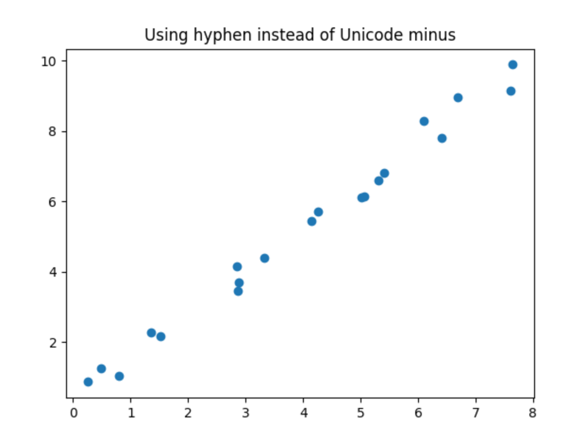
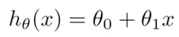
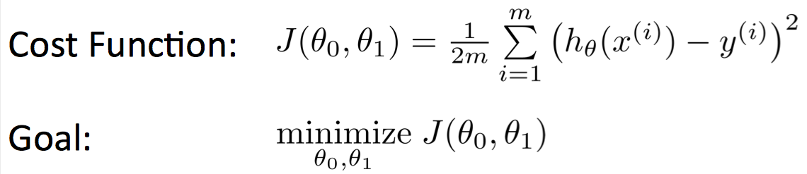

注意到大多数机器学习的课程都是从线性回归开始讲的，而且这部分直觉上的最容易理解，所以我也从线性回归开始学习。
概述
面对素不相识的概念，我们先来个素质三连：What、Why、How。
什么是线性回归？
线性回归是机器学习中最简单、基础的模型，维基百科线性回归条目中如此介绍：
在统计学中，线性回归（Linear regression）是利用称为线性回归方程的最小平方函数对一个或多个自变量和因变量之间关系进行建模的一种回归分析。 这种函数是一个或多个称为回归系数的模型参数的线性组合。 只有一个自变量的情况称为简单回归，大于一个自变量情况的叫做多元回归
举一个简单的栗子：
有如下一组数据，我们想根据这些数据研究他们之间的规律。

用脚趾头都能看出来，这横轴和纵轴数据是线性相关的，但是你不能用脚趾头证明它，所以需要有一种模型描述他们之间的规律，要尽量保证误差最小，从而能通过已有的数据预测未知的数据。
为什么要用线性回归？
这个问题太显而易见反而不容易回答，现实中很多数据之间的关系是线性的，只有一个因变量一个自变量就可以表述它们之间的关系，直觉上也知道用简单线性回归再合适不过了。当然，多个参数自变量也可以是线性回归，不过叫多元线性回归。但是需要注意，线性回归对异常值非常敏感，所以要不要用，怎么用还得仔细考量。
###怎么回归？
突然感觉在概述中问这三个问题好蠢，都说清楚的话这篇文章就讲完了…所以下面就详细说怎么回归，先从最简单的一元线性回归，又叫简单线性回归开始。
##一元线性回归
小学大概就学过，在直角坐标系中描述一条直线的方程是y=kx+b，这里也是一样的，我们的目的是寻找一个合适的方程，能最好的描述x和y的关系，这个方程在大多数课程里叫假设函数 hypothesis function，所以一元线性回归方程就是：

两个Theta怎么选，我们的目的应该是尽量拟合所有的点，所以需要一个指标来描述我们选的值合不合适，我们把它称作损失函数cost function 或者 loss function，这两个名称的含义似乎有些微不同，但是我没搞很清楚，先留个疑问。损失函数使用每个点上的对h(x)预期值与实际值的偏差先平方再取平均来描述，如下图所示。

它这里前面参数多了个二分之一，只是为了后续方便计算。我们的目标就是计算大量的cost function，然后找到其中的最小值。
参考：